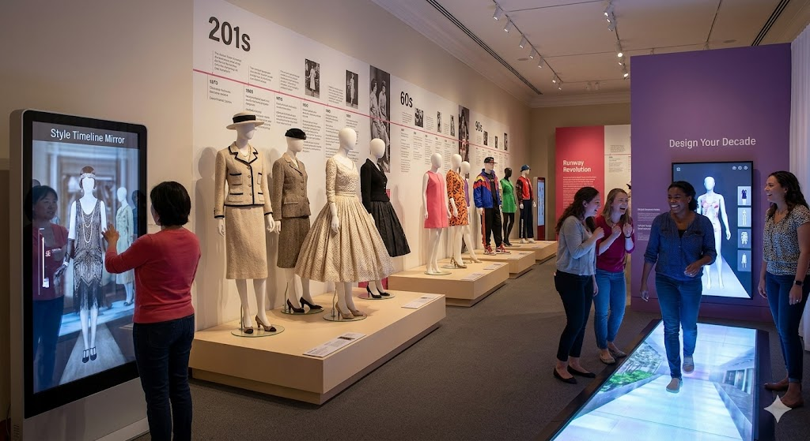
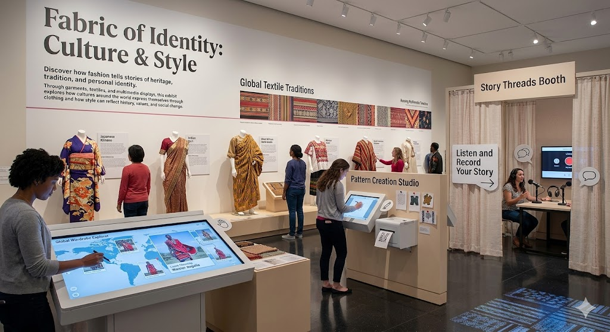
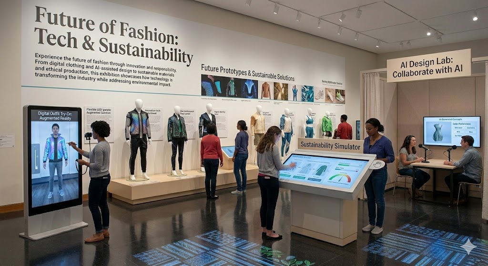

Exhibitions
Runway Revolution: Fashion Through the Decades

Step into the evolution of fashion, from elegant couture of the early 20th century to today’s bold streetwear and global trends. This exhibition highlights iconic silhouettes, influential designers, and the cultural moments that shaped each era of style.
Interactive Experiences:
- Virtual Runway Walk: Step onto a digital runway and model outfits from different decades.
- Style Timeline Mirror: Stand in front of an interactive mirror that transforms your outfit into styles from the 1920s, 60s, 90s, and today.
- Design Your Decade: Create your own look inspired by a specific era and see it come to life on a digital mannequin.
Fabric of Identity: Culture & Style

Discover how fashion tells stories of heritage, tradition, and personal identity. Through garments, textiles, and multimedia displays, this exhibit explores how cultures around the world express themselves through clothing and how style can reflect history, values, and social change.
Interactive Experiences:
- Global Wardrobe Explorer: Browse traditional outfits from around the world and learn their meanings through touchscreens.
- Pattern Creation Studio: Design your own textile patterns inspired by cultural motifs and print a digital sample.
- Story Threads Booth: Listen to and record personal stories about how clothing shapes identity and self-expression.
Future of Fashion: Tech & Sustainability

Experience the future of fashion through innovation and responsibility. From digital clothing and AI-assisted design to sustainable materials and ethical production, this exhibition showcases how technology is transforming the industry while addressing environmental impact.
Interactive Experiences:
- Digital Outfit Try-On: Use augmented reality to try on virtual garments and futuristic designs.
- Sustainability Simulator: Make choices about materials and production to see the environmental impact of your fashion line.
- AI Design Lab: Collaborate with an AI tool to generate original clothing concepts based on your preferences.